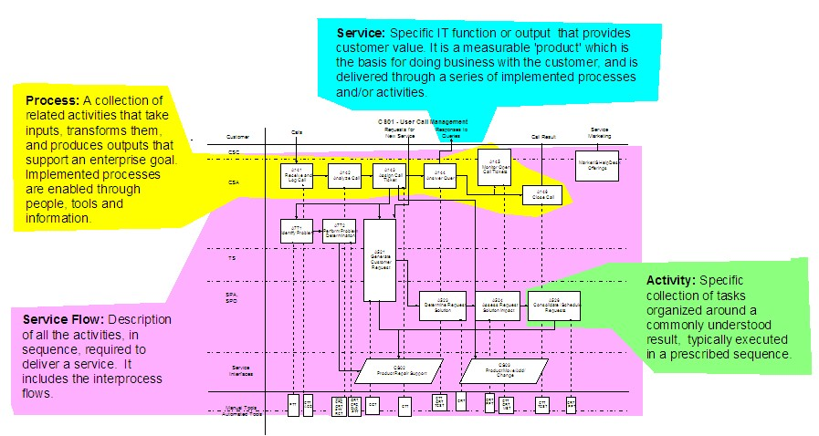

-
Service - Specific IT function [or output], performed on behalf of or in support of, a
customer [consumer], that provides measurable value. Services are a basis for doing business with the customer
[consumer of IT capabilities], requires an understanding of their needs, and are delivered through a series of
implemented activities.
-
Process - A collection of related activities that take inputs, transforms them, and produces
outputs that support an enterprise goal. Implemented processes are enabled through people, tools and
information.
-
Functional Process Model - a model such as the IT Process Model which represents a collection
of processes as inter related activities, developed from the viewpoint of usage by the provider of capability.
-
Activity - Specific collection of tasks organized around a commonly understood result,
typically executed in a prescribed sequence.
-
Task - A basic unit of work required to be executed in one or more activities. Typically it is
the lowest level of work which needs to be specified [based on the skills expected of the person (or tool)
executing the task.] There is little flexibility permitted in what is executed.
-
Service element - subset of activities necessary to provide a ‘complete’ service. A single
service element may be reused within multiple services. Contextual information is required to determine if a
collection of activities represents a ‘service’ or ‘service element’, i.e. in some cases a collection of
activities may be labeled a ‘service, while in others the same activities may be classed as ‘service elements.’
-
Portfolio services [external]- service capabilities an organization elects to provide to their
customers
-
Portfolio Support [internal] Services - service capabilities an organization deems necessary
to support their mission, but which are not delivered directly to customers. These infrastructure services may
be required to support one or more of the portfolio services, hence the name.
-
Service categories [groups] - arbitrary aggregation of multiple services, created for the
purpose of focus or indexing. The term ‘category’ was selected rather than ‘group’ to differentiate it from the
term ‘process groups’ as used within ITPM.
The following diagram illustrates the relationship among some of these terms:
